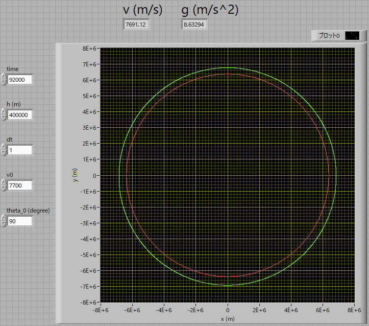
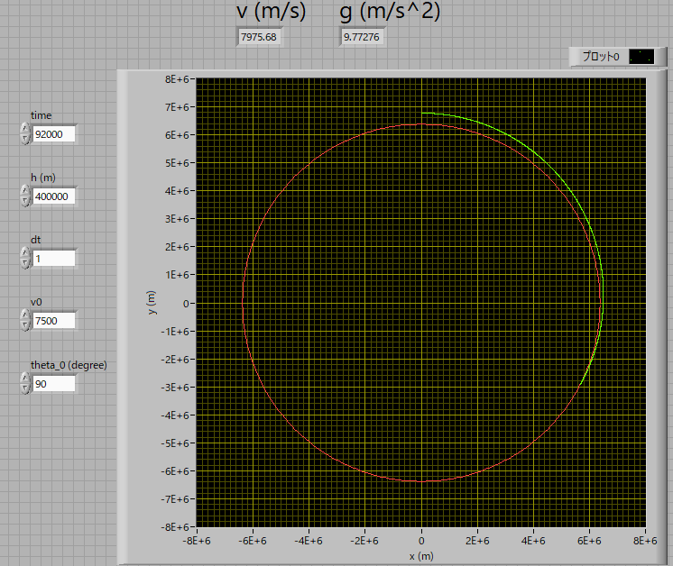
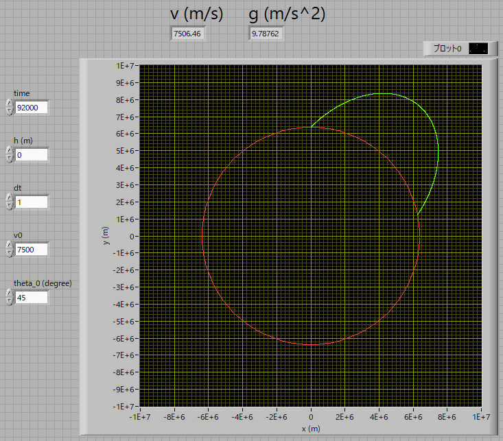
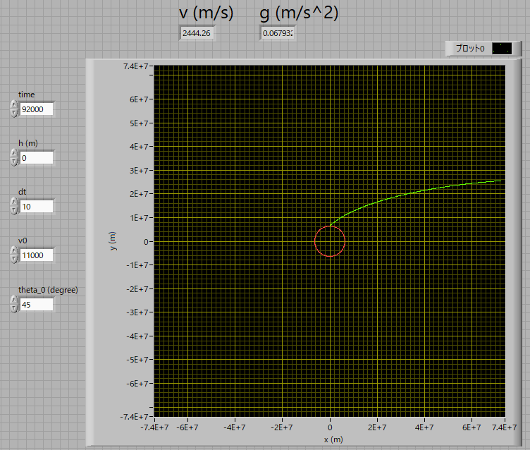

弾道計算 について-02
では，実際に計算してみましょう．
プログラムは，Labview2009，です．だいぶ古いバージョンですが未だに現役です．
条件は，まずは，国際宇宙ステーション（ISS)の条件から，ここ，の情報によると，
高度：400km
速度：7.7km/s
ということで
⊿ｔ：1s
角度：90度
で計算してみた結果が下の図です．
このように，ほぼ円軌道を描いているのが分かります．

ちなみに，速度を7.5km/sに落とすと，1/4周あたりで落下してしまいます．

地面から45度で，速度を7.5km/s，で打ち上げると，結局は1/4周あたりで落下します．

地面から45度で，速度を11km/s，で打ち上げると，地球に戻ってこずに，どんどん遠くなります．
これが，脱出速度，でしょうか．

次ページに，ちょっと気になる点を．